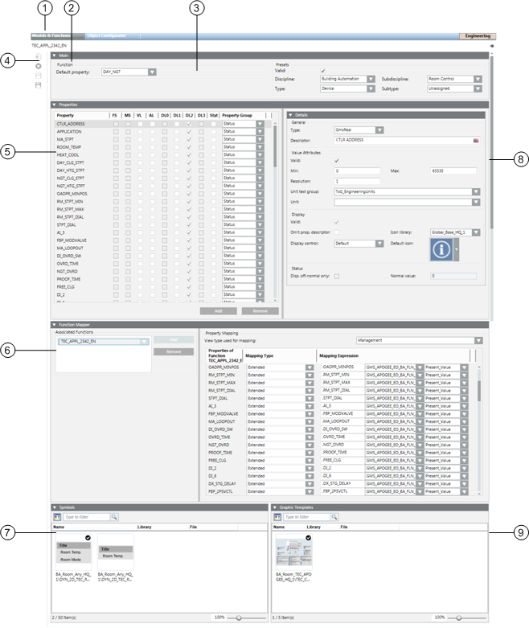

Function Editor Workspace
The Models & Functions tab becomes available when you select an Object Model or Function in System Browser. The contents of the workspace vary depending on whether you have selected an Object Model or a Function. For related procedures, see the step-by-step section.
Function Editor
When you select a function in System Browser, the following configuration workspace becomes available in Models & Functions.

| Item | Description |
1 | Models & Functions | Displays the workspace for configuring Object Models or Functions, depending on selection. |
2 | Mode | Indicates whether you are currently editing an Object Model or a Function. |
3 | Basic settings of this Function. | |
4 | Toolbar | Toolbar for Object Models, Functions, and the Object Configurator. |
5 | Lists all properties for the selected Object Model. | |
6 | Define mapping for Function properties for the Object Model properties. | |
7 | Symbols for the object, whereby a symbol can be defined as the default symbol. | |
8 | Detailed configuration of Value Attributes, Displays as well as Status. | |
9 | Graphic templates for object, where a graphic template can be defined as default template. |
Toolbar
Toolbar | |
Creates a new Function. | |
| Deletes a Function. |
| Saves the currently opened Function. |
| Saves the Function under a new name. |
| Creates a new localized object for Region, Country or Project. |